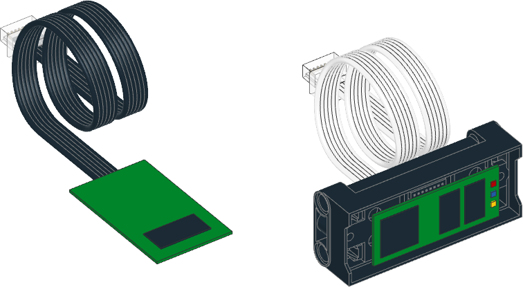

| ❌ | ✅ | ✅ | ✅ | ✅ | ✅ | ✅ |
|---|
Powered Upデバイス

- class PUPDevice(port)
Powered Upモーターまたはセンサー。
- Parameters:
port (Port) – デバイスが接続されているポート。
- info() dict
デバイスに関する情報を取得します。
DCモーターやライトなどのパッシブデバイスの場合は、
idキーのみを 持つ辞書を返します。UARTデバイスの場合は、
idキーとmodesキーを持つ辞書を 返します。modesの値はモードごとに1つのタプルを持つタプルの タプルで、それぞれにモード名、値の個数、データ型が含まれます。- Returns:
デバイス情報を格納した辞書。
- await read(mode) tuple
指定したモードから値を読み取ります。
パッシブタッチセンサーの場合は、
mode引数に関わらず、センサーが 押されているかどうかを示す単一の真偽値を返します。DCモーターやライトなど、読み取りをサポートしない他のパッシブ デバイスではエラーが発生します。
- await write(mode, data)
デバイスに値を書き込みます。一部のUARTデバイスとモードのみが これをサポートします。
- Parameters:
- Raises:
OSError – 書き込みをサポートしないパッシブデバイスの場合。
ValueError – モードが無効、モードが書き込み不可、値の個数が 一致しない、または値がデータ型の範囲外の場合。
例
デバイスの検出
from pybricks.iodevices import PUPDevice
from pybricks.parameters import Port
from uerrno import ENODEV
# Dictionary of device identifiers along with their name.
device_names = {
# pybricks.pupdevices.DCMotor
1: "Wedo 2.0 Medium Motor",
2: "Powered Up Train Motor",
# pybricks.pupdevices.Light
8: "Powered Up Light",
# pybricks.pupdevices.Motor
38: "BOOST Interactive Motor",
46: "Technic Large Motor",
47: "Technic Extra Large Motor",
48: "SPIKE Medium Angular Motor",
49: "SPIKE Large Angular Motor",
65: "SPIKE Small Angular Motor",
75: "Technic Medium Angular Motor",
76: "Technic Large Angular Motor",
# pybricks.pupdevices.TiltSensor
34: "Wedo 2.0 Tilt Sensor",
# pybricks.pupdevices.InfraredSensor
35: "Wedo 2.0 Infrared Motion Sensor",
# pybricks.pupdevices.ColorDistanceSensor
37: "BOOST Color Distance Sensor",
# pybricks.pupdevices.ColorSensor
61: "SPIKE Color Sensor",
# pybricks.pupdevices.UltrasonicSensor
62: "SPIKE Ultrasonic Sensor",
# pybricks.pupdevices.ForceSensor
63: "SPIKE Force Sensor",
# pybricks.pupdevices.ColorLightMatrix
64: "SPIKE 3x3 Color Light Matrix",
}
# Make a list of known ports.
ports = [Port.A, Port.B]
# On hubs that support it, add more ports.
try:
ports.append(Port.C)
ports.append(Port.D)
except AttributeError:
pass
# On hubs that support it, add more ports.
try:
ports.append(Port.E)
ports.append(Port.F)
except AttributeError:
pass
# Go through all available ports.
for port in ports:
# Try to get the device, if it is attached.
try:
device = PUPDevice(port)
except OSError as ex:
if ex.args[0] == ENODEV:
# No device found on this port.
print(port, ": ---")
continue
else:
raise
# Get the device id
id = device.info()["id"]
# Look up the name.
try:
print(port, ":", device_names[id])
except KeyError:
print(port, ":", "Unknown device with ID", id)